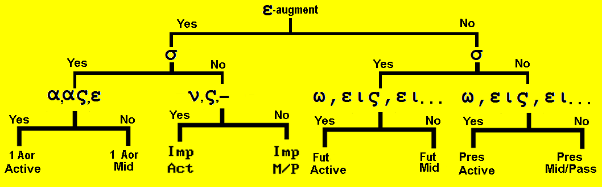

Lesson 17
| Greek | Meaning | Notes |
|---|
| ἱμάτιον | garment | |
| κεφαλή | head | Cognate: cephalic |
| παιδίον | infant, child | Cognate: pediatrics |
| μᾶλλον | more, rather | |
| μέσος | middle, in the midst | Cognate: Mesopotamia |
| ἤκουσα | I heard | Aorist of ἀκούω |
| ἔβλεψα | I saw | Aorist of βλέπω |
| ἐδίδαξα | I taught | Aorist of διδάσκω |
| ἐθεράπευσα | I healed | Aorist of θεραπεύω |
| ἐκήρυξα | I preached | Aorist of κηρύσσω |
| ἔγραψα | I wrote | Aorist of γράφω |
| ἔπεμψα | I sent | Aorist of πέμπω |
| ἐβάπτισα | I baptized | Aorist of βαπτίζω |
| ἔσωσα | I saved | Aorist of σώζω |
| ἐδόξασα | I glorified | Aorist of δοξάζω |
First aorist active indicative of λύω
| Singular |
| | Form | Meaning |
|---|
| 1st | ἔλυσα | I loosed |
| 2nd | ἔλυσας | yous loosed |
| 3rd | ἔλυσε (ν) | he/she/it loosed |
| Plural |
| | Form | Meaning |
|---|
| 1st | ἐλύσαμεν | we loosed |
| 2nd | ἐλύσατε | youp loosed |
| 3rd | ἔλυσαν | they loosed |
First aorist middle indicative of λύω
| Singular |
| | Form | Meaning |
|---|
| 1st | ἐλυσάμην | I loosed myself |
| 2nd | ἐλύσω | yous loosed yourself |
| 3rd | ἐλύσατο | he/she/it loosed himself |
| Plural |
| | Form | Meaning |
|---|
| 1st | ἐλυσάμεθα | we loosed ourselves |
| 2nd | ἐλύσασθε | youp loosed yourselves |
| 3rd | ἐλύσαντο | they loosed themselves |
- English verbs can create the past tense in two primary ways
- Preach becomes preached by simply adding -ed to the present form.
- Teach becomes taught by changing the basic stem.
- The past tense of both similar words are created in two different ways.
- The same is true in Greek
- The form of the First Aorist is created by adding an ending to the stem.
- The form of the Second Aorist is created by changing the stem.
- As far as the function of these two Aorists, there is no difference.
- Like the Imperfect, the Aorist is a secondary tense which means it deals with action in past time
- Thus there will be an augment at the beginning of the word, just like the imperfect (was/were) tense did
- If the stem began with a consonant, an ε is added to the beginning.
- If the stem began with a vowel, the ε is added and joins with the vowel and follows the rules that we saw with the imperfect tense
- The First Aorist adds a σ (or sometimes a κ) to the end of the stem, then the connecting vowel α, then the secondary endings.
- The secondary endings:
- For the imperfect: -ν, -ς, none, -μεν, -τε, -ν (or -σαν)
- For the First Aorist: blank, -ς, none (or -ν), -μεν, -τε, -ν
- Thus λύω becomes ἔλυσα [ε + λυ + σ + α]
- The σ will join with the last letter of the stem in a similar way that we saw when studying the Future tense.
- When a list of the verbs is given(See Appendix 1), the third form will be the aorist.
- The time of the Aorist is in the past because of the augment.
- The kind of action is punctiliar
- The Imperfect tense indicates continuous action in past time. Thus ἔλυον means I was loosing.
- The Aorist tense indicates finished action in past time. Thus ἔλυσα means I loosed.
- We sometimes call it "spot action" but you must understand that the act may have taken a lot of time.
- He built a house can be considered as one completed action even though it might have taken several months.
- Compare the imperfect, he was building a house which indicates on-going action in past time
- He became poor is one action viewed from its start.
- Imperfect tense contains was or were, but Aorist Active does not.
VERB ID
- Does the verb have an augment (visible ε or lengthened vowel)?
- If it does, the verb is a past tense: Aorist or Imperfect
- If it doesn't, the verb is present or future
- If the verb is past tense, does it have a σ after the stem?
- If it does, the verb is 1st Aorist, otherwise it is Imperfect
- If the verb is 1st Aorist, are the endings α, ας, ε, αμεν, ατε, αν?
- If it is, then we have 1st Aorist Active, otherwise 1st Aorist Middle
- Learn the chart and follow it to identify the verb

Translate the following:
- ἔλυσεν ὁ κύριος τοὺς δούλους αὐτοῦ.
- ἐπέμψαμεν τὰ τέκνα ἐκ τοῦ οἴκου.
- οἱ μαθηταὶ ἐδόξασαν τὸν θεὸν καὶ τὸν υἱὸν αὐτοῦ.
- διὰ τοὺς λόγους ὑμῶν ἐβλέψαμεν τὴν πονηρὰν ὁδὸν τοῦ κόσμου.
- ἐκήρυξας τὸ εὐαγγέλιον καὶ οἱ ἀδελφοί σου ἤκουσαν αὐτὸ καὶ ἐπίστευσαν.
- ἔγραψε παραβολὴν καὶ ἔπεμψεν αὐτὴν πρὸς τὴν ἐκκλησίαν.
- ὁ μεσσίας ἐδίδαξεν ἐν τῷ ἱερῷ καὶ ἐν τῷ οἴκῳ.
- ἡτοίμασε τοῖς μαθηταῖς τόπον ἐν τῷ οὐρανῷ.
- ἔσωσα ὑμᾶς ἐγώ, ὑμεῖς δὲ οὐκ ἐδέξασθε ἐμὲ εἰς τοὺς οἴκους ὑμῶν.
- ἠκούσατε ἐκείνας τὰς ἐντολὰς ἐν τῷ ἱερῷ, ἄλλας δὲ ἐν τῇ ἐκκλησίᾳ ἀκούσετε.